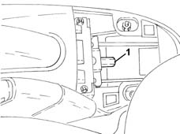
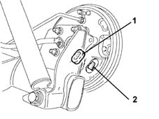
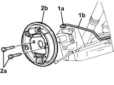
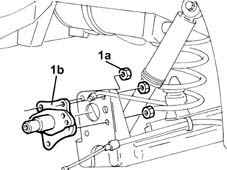
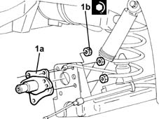
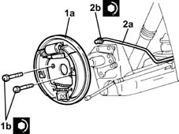

4450D14 hub axle pillar of one rear wheel, l/h or r/h - r+r with hub removed - includes bush replacement if necessary
- Path
- Procedures > 44 SUSPENSION AND WHEELS > 4450 WHEELS AND HUBS > 4450D rear wheel hubs > 4450D14 hub axle pillar of one rear wheel, l/h or r/h - r+r with hub removed - includes bush replacement if necessary
- Kind
- repair procedure (removal / refitting; the operation number is the code)
- Applies to
- all engines; all production periods
- Interactive page
- https://sloeber94.github.io/elrnDB-lYpsln/en/#/2429273
Applies to: all engines; all production periods
 Removing
Removing
 Refitting
RefittingRemove the protective cap from the bleed screw for the rear brake cylinder.
Connect the collection system (pipe and reservoir) to the bleed valve on the rear brake cylinder.
Loosen the bleed valve on the rear brake cylinder.
Wait for the brake-clutch reservoir to drain.
Proceed with removal 7040L22 REAR TRIM on TUNNEL -R.R. .
1. Loosen the handbrake cable adjustment nut.

Applies to: all engines; all production periods
1. Remove the cap.
2. Disconnect the handbrake cable from the rear brake.

Applies to: all engines; all production periods
1. Undo the connector (1a) and disconnect the rigid pipe from the rear brake cylinder (1b), cylinder side.
2. Undo the bolts (2a) and remove the rear drum brake assembly (2b).

Applies to: all engines; all production periods
1. Undo the nuts (1a) and remove the rear wheel stub axle (1b).

Applies to: all engines; all production periods
Refitting
Removing1. Place the rear wheel hub stub axle (1a) back in its housing and secure it tightening the nuts (1b) to the recommended torque.
 | Fastening | Component | Ø | Value (daNm) |
|---|---|---|---|---|
1b | Nut | REAR KNUCKLE | M10 | (Axle side) 5.4 ÷ 6.6 |

Applies to: all engines; all production periods
1. Place the rear drum brake assembly (1a) back in its housing and secure it tightening the bolts (1b) to the recommended torque.
| Fastening | Component | Ø | Value (daNm) |
|---|---|---|---|---|
1b | Bolt | REAR KNUCKLE | M8 | (Rear brake assembly side) 2.3 ÷ 2.8 |
2. Connect the rigid pipe to the rear brake cylinder (2a), cylinder side and tighten the connector (2b) to the recommended torque.
| Fastening | Component | Ø | Value (daNm) |
|---|---|---|---|---|
2b | Connector | RIGID PIPE REAR CYLINDERS (ABS) | - | (Rear brake shoe cylinder side.) 1.4 ÷ 1.8 |

Applies to: all engines; all production periods
Connect the handbrake cable to the rear brake.
Place the plug back in position.
Proceed with refitting 0010T64 brake and or clutch fluid check level and top up as necessary .
Proceed with refitting 0010T65 hydraulic brake system bleed air .
Proceed with refitting 3380A04 handbrake - check travel .
Proceed with refitting 7040L22 REAR TRIM on TUNNEL -R.R. .
Topics linked from this page (4)
- 0010T64 brake and or clutch fluid check level and top up as necessary
- 0010T65 hydraulic brake system bleed air
- 3380A04 handbrake - check travel
- 7040L22 REAR TRIM on TUNNEL -R.R.